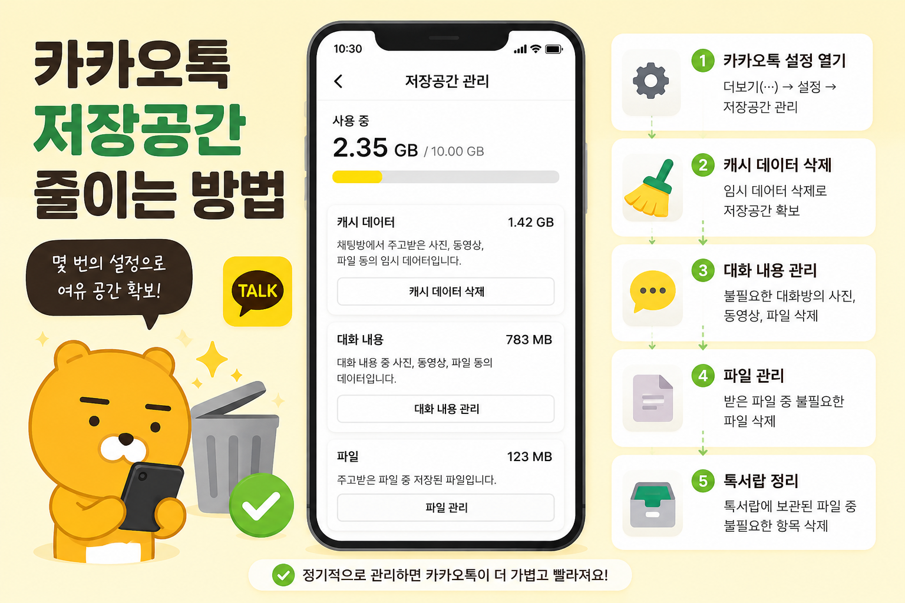

카카오톡 저장공간 줄이는 방법
카카오톡에서 용량을 많이 차지하는 대화방 미디어, 캐시, 다운로드 파일을 안전하게 정리하는 순서입니다.

디지털 기기와 앱 설정은 한 번에 모두 바꾸기보다, 현재 상태를 확인하고 필요한 부분부터 차근차근 조정하는 편이 안전합니다. 이 글은 처음 확인할 항목과 정리 순서, 주의할 점을 함께 볼 수 있도록 구성했습니다.
카카오톡 저장공간이 커지는 이유
카카오톡은 메시지만 저장하는 앱이 아닙니다. 사진, 동영상, 음성 파일, 문서, 이모티콘 데이터, 임시 파일이 함께 쌓입니다. 특히 사진을 많이 주고받는 단체방이 있으면 앱 용량이 빠르게 커질 수 있습니다. 저장공간을 줄일 때는 앱을 삭제하기보다 내부 저장공간 관리부터 확인하는 것이 좋습니다.
캐시 삭제와 파일 삭제 구분하기
캐시는 앱 사용 중 임시로 쌓이는 파일입니다. 보통 캐시를 삭제해도 대화 내용이 바로 사라지지는 않습니다. 하지만 대화방의 사진, 동영상, 파일을 삭제하는 메뉴는 실제 첨부 자료를 지울 수 있습니다. 중요한 사진이나 문서가 있다면 먼저 갤러리나 다른 폴더에 저장해 둔 뒤 정리해야 합니다.
용량이 큰 대화방부터 확인하기
전체 대화방을 한꺼번에 정리하려고 하면 필요한 자료까지 지우기 쉽습니다. 먼저 사진과 동영상이 많이 오간 대화방, 오래된 단체방, 업무 자료를 주고받은 방을 확인하세요. 대화방별 파일을 보면서 오래된 영상이나 다시 받을 수 있는 자료부터 정리하면 부담이 적습니다.
자동 다운로드 설정 점검하기
정리 후에도 같은 문제가 반복된다면 자동 다운로드 설정을 확인해야 합니다. 사진이나 영상이 모바일 데이터와 와이파이에서 자동으로 내려받아지면 저장공간이 계속 줄어들 수 있습니다. 필요할 때만 다운로드하도록 설정하면 장기적으로 공간 관리가 쉬워집니다.
정리 후 앱 동작 확인하기
캐시나 파일을 정리한 뒤에는 카카오톡을 다시 열어 대화방, 사진 보기, 파일 다운로드가 정상적으로 되는지 확인하세요. 정리 과정에서 대화 내용보다 첨부 파일이 사라져 당황하는 경우가 있으므로 중요한 대화방은 한 번 더 확인하는 습관이 필요합니다.

설정을 바꾸기 전 마지막 확인
- 캐시 삭제와 첨부 파일 삭제를 구분하기
- 중요한 사진과 문서는 먼저 저장하기
- 용량이 큰 대화방부터 확인하기
- 자동 다운로드 설정을 조정하기
- 정리 후 대화방 파일 열림 여부 확인하기
설정을 바꾸거나 파일을 삭제하기 전에는 중요한 자료가 남아 있는지 한 번 더 확인하는 것이 좋습니다. 가족과 함께 쓰는 기기나 업무용 계정이라면 변경 내용을 공유해 두면 불필요한 혼선을 줄일 수 있습니다.
카카오톡 저장공간 실제 상황 예시
카카오톡 저장공간 관련 문제는 대부분 한 가지 메뉴만으로 해결되지 않습니다. 알림, 권한, 저장공간, 계정 상태처럼 여러 설정이 연결되어 있기 때문에 현재 상태를 먼저 확인하고 하나씩 바꾸는 방식이 안전합니다. 이렇게 하면 어떤 변경이 실제로 효과가 있었는지도 파악하기 쉽습니다.
카카오톡 저장공간에서 피해야 할 실수
실수는 대개 급하게 처리할 때 생깁니다. 저장공간이 부족하다고 바로 삭제하거나, 보안이 걱정된다고 모든 권한을 꺼버리면 필요한 기능까지 멈출 수 있습니다. 변경 전후를 비교하고, 중요한 자료나 계정은 공식 도움말을 확인한 뒤 진행하는 것이 좋습니다.
카카오톡 저장공간 관련 설정을 먼저 확인해야 하는 이유
카카오톡 저장공간 관련 설정은 단순히 메뉴 하나를 켜고 끄는 문제가 아니라, 실제 사용 흐름에서 어떤 불편을 줄이려는지 먼저 정해야 합니다. 같은 메뉴라도 기기 제조사, 운영체제 버전, 앱 업데이트 상태에 따라 이름이 달라질 수 있으므로 현재 화면을 기준으로 차근차근 확인하는 것이 좋습니다.
카카오톡 저장공간에서 자주 생기는 실수
많은 사용자가 바로 삭제하거나 초기화하는 방식으로 문제를 해결하려 하지만, 그 전에 현재 상태를 기록해 두면 되돌리기가 쉽습니다. 알림, 권한, 저장공간, 로그인 상태처럼 서로 연결된 항목은 하나씩 바꾼 뒤 실제로 원하는 결과가 나오는지 확인해야 합니다.
카카오톡 저장공간 점검 후 다시 볼 부분
가족 기기나 업무용 계정에서는 본인에게는 사소한 변경도 다른 사람에게 큰 불편이 될 수 있습니다. 변경 전 백업 여부를 확인하고, 중요한 계정이나 자료가 관련되어 있다면 공식 도움말을 함께 보면서 진행하는 편이 안전합니다.